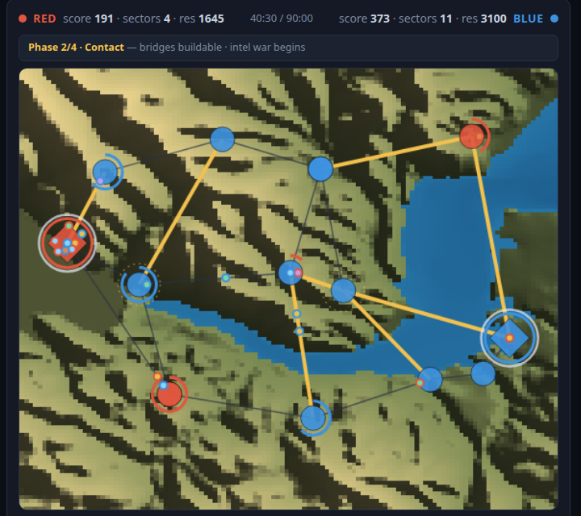
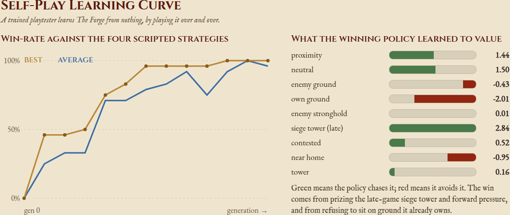
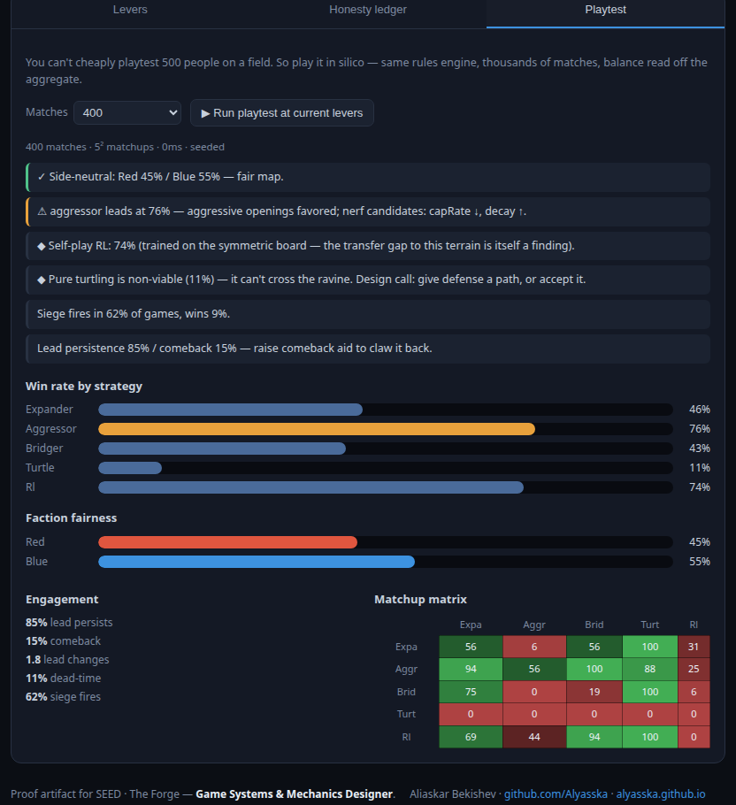

Balance Sandbox — a proactive design sample for SEED
An in-silico playtest for one Forge system — territory control, the bridge momentum layer, player classes, and a siege endgame. You can't cheaply playtest a 500-person, 90-minute field game, so this models one system and runs thousands of matches headless to read the balance before anyone books a venue. The same rules engine drives the watchable live match and the headless sims — a designer/GM pre-flight rig, not a demo game. It is the deliverable the role names: a living design document, balance logic, and playtest frameworks — not just code.

Live match on a real DEM of Lake San Antonio (a Lightning-in-a-Bottle site). The reservoir & creeks become the bridge-gated ravine; travel-time follows real slope. Gold spans are built bridges, dashed lines unbuilt crossings, diamonds are strongholds (with Wall arcs), dots are class-typed squads.
A policy trained from a blank genome reaches ~100% against the four hand-written bots — it surfaced a hole a scripted pool would have called "balanced." RL here is a better playtester, not flashy AI. (Cross-Entropy Method, no GPU; a gym-microrts/PPO skeleton ships for the scaled version.)
The same ruleset that's fine on a symmetric board goes aggressor-dominant (~75%) on real Lake San Antonio terrain, and the venue runs side-biased. Balance is per-venue, not one-and-done — that's the recurring service.
The board-trained policy slips ~85% → ~70s% on real terrain (a transfer gap), and turtling can't cross the ravine. Both surface as design calls, each with the levers to change them.

Self-play learning curve: blank genome → ~100% win-rate vs the heuristic pool over 12 generations, with the weights it discovered (it taught itself to rush the Phase-4 siege tower).
levers10 balance dials, each with an honesty ledger — intent / trade-off / failure mode.
playtestMonte Carlo over all strategy matchups: faction fairness, dominant-strategy detection, snowball vs comeback, dead-time, siege rate, matchup matrix.
mechanicsPresence-by-pulse capture (NFC-tap-shaped events), classes, the 90-minute phase arc, walls + battering + delay towers, fog-of-war intel.
stackPlain ES-module JS (no build, runs on Pages) · Python+Pillow for the DEM pull ·
seeded & reproducible (node test/smoke.mjs).

The balance readout on the real field — findings, win-rate by strategy, and the matchup matrix.
End vision. The pre-flight for The Forge: tune economy, class weights, and phase timings per venue in sim → ship a near-balanced rulebook → spend the few expensive on-field pilots validating how real humans behave, not discovering that turtling is broken with 500 people on a field.
Scope, honestly: one system, finished small. Classes / intel / parley are designed in full but only partly wired; bots map the structural balance envelope, not the feel.